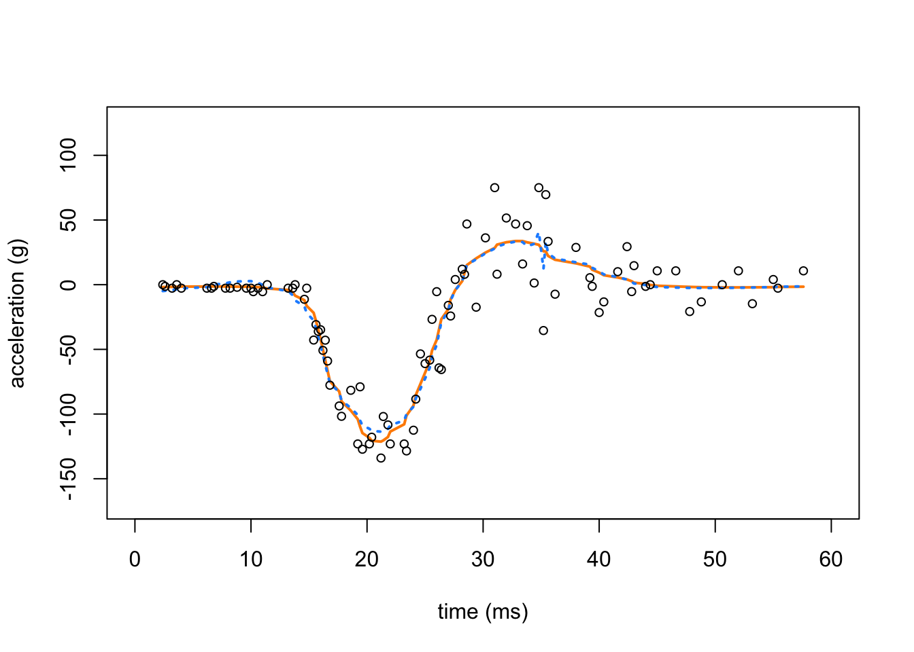
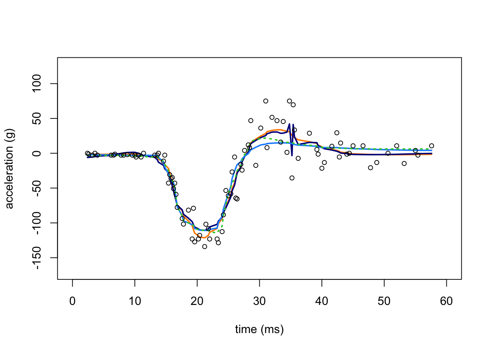

Motorcycle Acceleration example
Zhengrong Xing, Peter Carbonetto and Matthew Stephens
Last updated: 2019-12-18
Checks: 7 0
Knit directory: smash-paper/analysis/
This reproducible R Markdown analysis was created with workflowr (version 1.5.0.9000). The Checks tab describes the reproducibility checks that were applied when the results were created. The Past versions tab lists the development history.
Great! Since the R Markdown file has been committed to the Git repository, you know the exact version of the code that produced these results.
Great job! The global environment was empty. Objects defined in the global environment can affect the analysis in your R Markdown file in unknown ways. For reproduciblity it’s best to always run the code in an empty environment.
The command set.seed(1) was run prior to running the code in the R Markdown file. Setting a seed ensures that any results that rely on randomness, e.g. subsampling or permutations, are reproducible.
Great job! Recording the operating system, R version, and package versions is critical for reproducibility.
Nice! There were no cached chunks for this analysis, so you can be confident that you successfully produced the results during this run.
Great job! Using relative paths to the files within your workflowr project makes it easier to run your code on other machines.
Great! You are using Git for version control. Tracking code development and connecting the code version to the results is critical for reproducibility. The version displayed above was the version of the Git repository at the time these results were generated.
Note that you need to be careful to ensure that all relevant files for the analysis have been committed to Git prior to generating the results (you can use wflow_publish or wflow_git_commit). workflowr only checks the R Markdown file, but you know if there are other scripts or data files that it depends on. Below is the status of the Git repository when the results were generated:
Ignored files:
Ignored: dsc/code/Wavelab850/MEXSource/CPAnalysis.mexmac
Ignored: dsc/code/Wavelab850/MEXSource/DownDyadHi.mexmac
Ignored: dsc/code/Wavelab850/MEXSource/DownDyadLo.mexmac
Ignored: dsc/code/Wavelab850/MEXSource/FAIPT.mexmac
Ignored: dsc/code/Wavelab850/MEXSource/FCPSynthesis.mexmac
Ignored: dsc/code/Wavelab850/MEXSource/FMIPT.mexmac
Ignored: dsc/code/Wavelab850/MEXSource/FWPSynthesis.mexmac
Ignored: dsc/code/Wavelab850/MEXSource/FWT2_PO.mexmac
Ignored: dsc/code/Wavelab850/MEXSource/FWT_PBS.mexmac
Ignored: dsc/code/Wavelab850/MEXSource/FWT_PO.mexmac
Ignored: dsc/code/Wavelab850/MEXSource/FWT_TI.mexmac
Ignored: dsc/code/Wavelab850/MEXSource/IAIPT.mexmac
Ignored: dsc/code/Wavelab850/MEXSource/IMIPT.mexmac
Ignored: dsc/code/Wavelab850/MEXSource/IWT2_PO.mexmac
Ignored: dsc/code/Wavelab850/MEXSource/IWT_PBS.mexmac
Ignored: dsc/code/Wavelab850/MEXSource/IWT_PO.mexmac
Ignored: dsc/code/Wavelab850/MEXSource/IWT_TI.mexmac
Ignored: dsc/code/Wavelab850/MEXSource/LMIRefineSeq.mexmac
Ignored: dsc/code/Wavelab850/MEXSource/MedRefineSeq.mexmac
Ignored: dsc/code/Wavelab850/MEXSource/UpDyadHi.mexmac
Ignored: dsc/code/Wavelab850/MEXSource/UpDyadLo.mexmac
Ignored: dsc/code/Wavelab850/MEXSource/WPAnalysis.mexmac
Ignored: dsc/code/Wavelab850/MEXSource/dct_ii.mexmac
Ignored: dsc/code/Wavelab850/MEXSource/dct_iii.mexmac
Ignored: dsc/code/Wavelab850/MEXSource/dct_iv.mexmac
Ignored: dsc/code/Wavelab850/MEXSource/dst_ii.mexmac
Ignored: dsc/code/Wavelab850/MEXSource/dst_iii.mexmac
Untracked files:
Untracked: files.txt
Note that any generated files, e.g. HTML, png, CSS, etc., are not included in this status report because it is ok for generated content to have uncommitted changes.
These are the previous versions of the R Markdown and HTML files. If you’ve configured a remote Git repository (see ?wflow_git_remote), click on the hyperlinks in the table below to view them.
| File | Version | Author | Date | Message |
|---|---|---|---|---|
| Rmd | 7663045 | Peter Carbonetto | 2019-12-18 | wflow_publish(“motorcycle.Rmd”) |
| html | e14abc7 | Peter Carbonetto | 2019-12-18 | Added comparison to TI thresholding in motorcycle data example. |
| Rmd | c76fbf7 | Peter Carbonetto | 2019-12-18 | wflow_publish(“motorcycle.Rmd”) |
| Rmd | 35a397a | Peter Carbonetto | 2019-11-12 | Simplifying some of the code in poisson.Rmd. |
| Rmd | 500381a | Zhengrong Xing | 2019-10-28 | move gausdemo; add HF for chipseq |
| html | 500381a | Zhengrong Xing | 2019-10-28 | move gausdemo; add HF for chipseq |
| html | f0221c5 | Zhengrong Xing | 2019-10-28 | address some reviewer comments |
| html | 99d1f34 | Peter Carbonetto | 2018-12-07 | Re-built all the outdated workflowr webpages. |
| Rmd | a09d13e | Peter Carbonetto | 2018-11-09 | Adjusted setup steps in a few of the R Markdown files. |
| Rmd | f9f193c | Peter Carbonetto | 2018-11-07 | Revised setup instructions for a couple .Rmd files. |
| html | 85368eb | Peter Carbonetto | 2018-11-06 | A few final adjustments to the motorcycle example. |
| Rmd | 3b7071b | Peter Carbonetto | 2018-11-06 | wflow_publish(“motorcycle.Rmd”) |
| html | 3ce045f | Peter Carbonetto | 2018-11-06 | Added explanatory text to motorcycle example. |
| Rmd | 4a73ed9 | Peter Carbonetto | 2018-11-06 | wflow_publish(“motorcycle.Rmd”) |
| html | d51e8f8 | Peter Carbonetto | 2018-11-06 | Adjusted the plots in the motorcycle example. |
| Rmd | fd51be8 | Peter Carbonetto | 2018-11-06 | wflow_publish(“motorcycle.Rmd”) |
| html | fdc9c33 | Peter Carbonetto | 2018-11-06 | Build site. |
| Rmd | 1ab1447 | Peter Carbonetto | 2018-11-06 | wflow_publish(“motorcycle.Rmd”) |
| html | 7d7ce92 | Peter Carbonetto | 2018-11-06 | Added setup instructions to motorcycle example. |
| Rmd | f0059b3 | Peter Carbonetto | 2018-11-06 | wflow_publish(“motorcycle.Rmd”) |
| Rmd | 507a261 | Peter Carbonetto | 2018-11-06 | Having trouble re-building spikesdemo.html. |
| html | f6a9477 | Peter Carbonetto | 2018-10-10 | Completed revisions of motorcycle example. |
| Rmd | 7f2ef79 | Peter Carbonetto | 2018-10-10 | wflow_publish(“motorcycle.Rmd”) |
| Rmd | 3b3d373 | Peter Carbonetto | 2018-10-09 | Some more improvements to the motorcycle example. |
| Rmd | 757462c | Peter Carbonetto | 2018-10-09 | Working on motorcycle .Rmd example. |
This is an illustration of “smoothing via adaptive shrinkage” (SMASH) applied to the Motorcycle Accident data. This implements the “illustrative application” presented in Sec. 5.1 of the manuscript.
Initial setup instructions
To run this example on your own computer, please follow these setup instructions. These instructions assume you already have R and/or RStudio installed on your computer.
Download or clone the git repository on your computer.
Launch R, and change the working directory to be the “analysis” folder inside your local copy of the git repository.
Install the devtools, wavethresh and EbayesThresh packages used here and in the code below:
install.packages(c("devtools","wavethresh","EbayesThresh"))Finally, install the smashr package from GitHub:
devtools::install_github("stephenslab/smashr")See the “Session Info” at the bottom for the versions of the software and R packages that were used to generate the results shown below.
Set up R environment
Load the MASS, lattice wavethresh, EbayesThresh and smashr packages. The MASS package is loaded only for the Motorcycle Accident data. Some additional functions are defined in file motorcycle.functions.R.
library(MASS)
library(lattice)
library(smashr)
library(wavethresh)
library(EbayesThresh)
source("../code/motorcycle.functions.R")Note that the MASS and lattice packages are included in most standard R installations, so you probably don’t need to install these packages separately.
Prepare data for SMASH
Load the motorcycle data from the MASS package, and order the data points by time.
data(mcycle)
x.ini.mc <- sort(mcycle$times)
y.ini.mc <- mcycle$accel[order(mcycle$times)]Run SMASH
Apply SMASH to the Motorcycle Accident data set.
res.mc <- smash.wrapper(x.ini.mc,y.ini.mc)Summarize results of SMASH analysis
Create a plot showing the Motorcycle Accident data and the smash estimates (with the dashed red lines showing the confidence intervals).
plot(res.mc$x,res.mc$mu.est,type = "l",
ylim = c(min(res.mc$y - 2 * sqrt(res.mc$var.est)),
max(res.mc$y + 2 * sqrt(res.mc$var.est))),
xlab = "time (ms)", ylab = "acceleration (g)",lwd = 2,
col = "darkorange",xlim = c(0,60),xaxp = c(0,60,6))
lines(res.mc$x, res.mc$mu.est + 2*sqrt(res.mc$var.est),lty = 5,
lwd = 2,col = "dodgerblue")
lines(res.mc$x,res.mc$mu.est - 2*sqrt(res.mc$var.est),
lty = 5,lwd = 2,col = "dodgerblue")
points(res.mc$x,res.mc$y,pch = 1,cex = 1,col = "black")
SMASH, homoskedastic vs. heteroskedastic
Apply SMASH, this time assuming equal variances, to the Motorcycle Accident data set:
res.cons.mc <- smash.cons.wrapper(x.ini.mc,y.ini.mc)In this second plot, we compare the mean estimate provided by SMASH (with heteroskedastic variances; orange line) against homoskedastic SMASH (dotted, light blue line).
plot(res.mc$x,res.mc$mu.est,type = "l",
ylim = c(min(res.mc$y - 2 * sqrt(res.mc$var.est)),
max(res.mc$y + 2 * sqrt(res.mc$var.est))),
xlab = "time (ms)",ylab = "acceleration (g)",lwd = 2,
col = "darkorange",xlim = c(0,60),xaxp = c(0,60,6))
lines(res.cons.mc$x,res.cons.mc$mu.est,lwd = 2,lty = "dotted",
col = "dodgerblue")
points(res.mc$x,res.mc$y,pch = 1,cex = 0.8,col = "black")
While the estimates are similar, heteroskedastic SMASH yields a noticeably smoother curve.
Apply TI thresholding to the Motorcycle Accident data
Apply TI thresholding to the Motorcycle Accident data set. In this first run, the variance is assumed to be constant.
res.ti.cons.mc <- tithresh.cons.wrapper(x.ini.mc,y.ini.mc)Apply TI thresholding to the Motorcycle Accident data, this time using the variances estimated using the “median absolute deviation”, or RMAD, method.
res.ti.rmad.mc <- tithresh.rmad.wrapper(x.ini.mc,y.ini.mc)Apply TI thresholding to the Motorcycle Accident data, this time using the variances estimated by SMASH.
res.ti.mc <- tithresh.wrapper(x.ini.mc,y.ini.mc)Compare SMASH vs. TI thresholding
In this next plot, we compare the SMASH estimates with heteroskedastic variances (the same orange line as above) against the the mean estimates obtained by TI thresholding with constant variance (solid dark blue line), TI thresholding with RMAD variance estimates (solid light blue line), and TI thresholding when the variances have been estimated by SMASH (dotted green line).
plot(res.mc$x,res.mc$mu.est,type = "l",
ylim = c(min(res.mc$y - 2 * sqrt(res.mc$var.est)),
max(res.mc$y + 2 * sqrt(res.mc$var.est))),
xlab = "time (ms)",ylab = "acceleration (g)",lwd = 2,
col = "darkorange",xlim = c(0,60),xaxp = c(0,60,6))
lines(res.ti.cons.mc$x,res.ti.cons.mc$mu.est,lwd = 2,lty = "solid",
col = "darkblue")
lines(res.ti.rmad.mc$x,res.ti.rmad.mc$mu.est,lwd = 2,lty = "solid",
col = "dodgerblue")
lines(res.ti.mc$x,res.ti.mc$mu.est,lwd = 2,col = "limegreen",lty = "dotted")
points(res.mc$x,res.mc$y,pch = 1,cex = 0.8,col = "black")
The TI thresholding estimate with constant variance, like the SMASH estimate with homoskedastic variances (in the plot above), shows notable artifacts. By contrast, when TI thresholding is provided with either the RMAD or SMASH variance estimates, the mean signal is substantially smoother.
sessionInfo()
# R version 3.4.3 (2017-11-30)
# Platform: x86_64-apple-darwin15.6.0 (64-bit)
# Running under: macOS High Sierra 10.13.6
#
# Matrix products: default
# BLAS: /Library/Frameworks/R.framework/Versions/3.4/Resources/lib/libRblas.0.dylib
# LAPACK: /Library/Frameworks/R.framework/Versions/3.4/Resources/lib/libRlapack.dylib
#
# locale:
# [1] en_US.UTF-8/en_US.UTF-8/en_US.UTF-8/C/en_US.UTF-8/en_US.UTF-8
#
# attached base packages:
# [1] stats graphics grDevices utils datasets methods base
#
# other attached packages:
# [1] EbayesThresh_1.4-13 wavethresh_4.6.8 smashr_1.2-5
# [4] lattice_0.20-35 MASS_7.3-48
#
# loaded via a namespace (and not attached):
# [1] Rcpp_1.0.1 compiler_3.4.3 later_0.8.0
# [4] git2r_0.26.1 workflowr_1.5.0.9000 bitops_1.0-6
# [7] iterators_1.0.10 tools_3.4.3 digest_0.6.18
# [10] evaluate_0.13 Matrix_1.2-12 foreach_1.4.4
# [13] yaml_2.2.0 parallel_3.4.3 xfun_0.7
# [16] stringr_1.4.0 knitr_1.23 fs_1.2.7
# [19] caTools_1.17.1.2 rprojroot_1.3-2 grid_3.4.3
# [22] glue_1.3.1 data.table_1.12.0 R6_2.4.0
# [25] rmarkdown_1.17 mixsqp_0.3-6 ashr_2.2-39
# [28] magrittr_1.5 whisker_0.3-2 backports_1.1.2
# [31] promises_1.0.1 codetools_0.2-15 htmltools_0.3.6
# [34] httpuv_1.5.0 stringi_1.4.3 doParallel_1.0.14
# [37] pscl_1.5.2 truncnorm_1.0-8 SQUAREM_2017.10-1